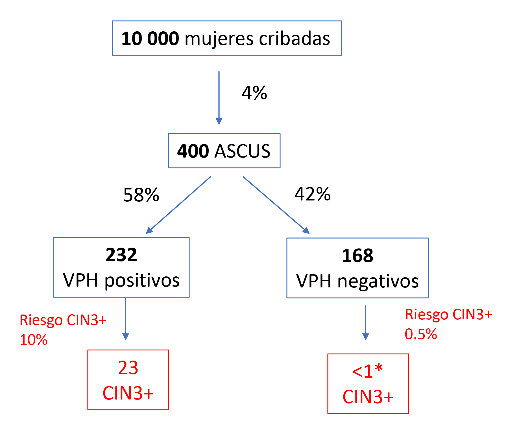
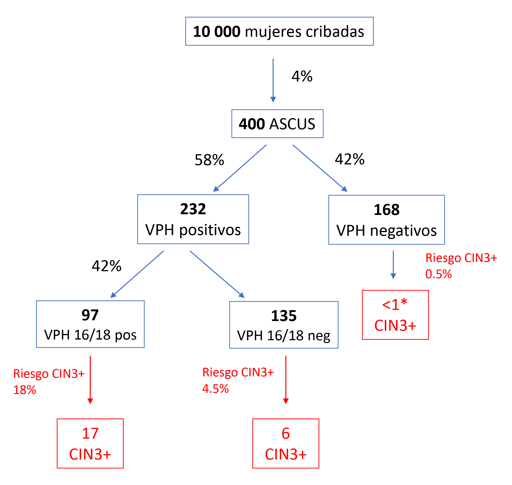

¿Cómo interpretar un riesgo?
Cuando decimos que el riesgo inmediato de tener CIN3+ es del 10% o superior quiere decir que, de cada 100 mujeres en las mismas circunstancias, 10 van a tener un CIN3 o peor.
10% es el riesgo que han calculado Arbyn et al [30] de que una mujer con un resultado de citología ASC-US y VPH positivo desarrolle un CIN3+. Es decir, de 100 mujeres ASC-US y VPH positivo, 10 van a tener un CIN3+.
NOTA:
En la literatura científica se pueden encontrar variaciones en las estimaciones de riesgo según las poblaciones estudiadas o la metodología utilizada. Por ejemplo, para el resultado de ASC-US VPH positivo, Gilham et al.[13] calcularon que 10% era el riesgo de desarrollar CIN3+ que mostraban las mujeres de UK en un periodo de 3 años, mientras que Egemen et al. [31] estimaron que el riesgo inmediato era del 5% y del 7.3% en 5 años para las mujeres de Estados Unidos.
Por lo tanto, ante un riesgo del 10%, el 90% (90 de cada 100) van a estar libres de enfermedad. Pero como hemos visto añadiendo una prueba adicional de triaje (como por ejemplo el genotipado parcial) nos permite clasificar todavía mejor estas mujeres y reducir el riesgo de sobretratamiento.
En el caso de un resultado de HSIL+ con VPH16 positivo el riesgo de CIN3 se eleva al 60%[13,31]. De 100 mujeres HSIL+ con VPH16 positivo, 60 van a tener un CIN3+.
Tener en cuenta que los distintos riesgos (probabilidad), se aplican a resultados con frecuencias distintas.
Las mujeres HSIL+ con VPH16 positivo tienen un riesgo muy elevado de presentar un CIN3+ (más del 60%), pero se trata de una circunstancia poco frecuente (<1% de todas las mujeres cribadas)
Si continuamos con el ejemplo anterior, no todas las mujeres ASC-US y VPH positivas tienen el mismo riesgo de desarrollar CIN3+, una mujer con ASC-US y VPH positiva si es además positiva para VPH 16/18 tendrá un riesgo estimado de 18% de CIN3+. En cambio, una mujer ASC-US y VPH positiva pero negativa para 16/18 su riesgo estimado de CIN3+ es de 4.5%. Sin embargo, es más frecuente el ASC-US positivo para otros tipos de alto riesgo que para 16/18.
En la siguiente tabla podemos ver el riesgo y la frecuencia de cada uno de estos eventos. Si combinamos riesgos y frecuencias veremos cómo se traducen en número de casos de manera distinta (figuras 8 y 9).
TABLA 1 Frecuencias y riesgos basados en los datos de Arbyn et al. 2017
| Resultados | Riesgo de CIN3+ | Frecuencia |
|---|---|---|
| Mujer con citología con resultado ASC-US | 6% | 4% de las mujeres cribadas |
| Mujer con citología con resultado ASC-US y VPH positivo | 10% | 2.3% de las mujeres cribadas 58% de las mujeres con ASC-US son VPH positivas |
| Mujer con citología con resultado ASC-US y VPH16 o 18 positivo | 18% | 1% de las mujeres cribadas 25% de las mujeres con ASC-US 42% de las mujeres con ASC-US y VPH positivas |
En la figura 8 vemos aplicados los datos de la tabla anterior al ejemplo de estudio:
De cada 10 000 mujeres cribadas, esperamos aproximadamente que un 4% tengan un resultado de ASC-US en la citología, lo que equivaldría a unas 400 mujeres. El riesgo de que estas mujeres tengan un CIN3+ es del 6%, por lo que esperamos 24 casos de CIN3+ (400 mujeres x 6% riesgo).
Si no se realizara ningún tipo de triaje, y se derivaran directamente a colposcopia, estaríamos realizando una colposcopia innecesaria a 376 mujeres.
La prueba de detección de VPH permite clasificar mejor las mujeres con ASC-US. El riesgo de CIN3+ en las mujeres ASC-US VPH negativas es muy bajo, prácticamente equivalente al de tener una citología negativa. En cambio, las mujeres ASC-US VPH positivas (58% según los datos de Arbyn et al.) tienen un riesgo de CIN3+ del 10%.
De las 400 mujeres con ASC-US, tendremos 232 que serán VPH positivas frente a 168 negativas de las que el riesgo es tan bajo (0.5%) que el número de CIN3+ esperados no llegaría a un caso.
Con solo una prueba de triaje habremos evitado derivar a colposcopia 168 mujeres) y concentrado los recursos en las mujeres de mayor riesgo (VPH positivas).
FIGURA 8 Aplicación de frecuencias de resultados y riesgos de CIN3+ sobre 10,000 mujeres cribadas
Por cada 400 ASC-US, habrá 24 CIN3+
Cada nivel de riesgo tendrá asociado una actuación clínica concreta (seguimiento al año, derivación a colposcopia, etc.). Estos niveles se determinarán según el riesgo (probabilidad) de desarrollar una lesión precancerosa o cáncer en función de la información disponible. Para un mismo nivel de riesgo, mismo manejo clínico, "Equal Management of Equal Risk".
Si por ejemplo dispusiéramos de una prueba de triaje adicional, como pudiera ser el genotipado parcial, todavía se podría añadir una estratificación del riesgo adicional. Aproximadamente el 42% de las mujeres con un ASC-US y VPH positivo, son a su vez positivas para 16/18, y éstas tienen un riesgo de CIN3+ del 18%.
De las 400 mujeres con ASC-US, esperaremos que 97 (una cuarta parte) sean VPH positivas para VPH 16/18. De los 24 CIN3+ esperados en las 400 mujeres con ASC-US, 17 (el 71%) serán VPH 16/18.
Los criterios de derivación a valoración colposcópica suelen establecerse a partir de riesgos mayores del 5-10% de riesgo de CIN3+. Por lo tanto, en el caso de las mujeres con ASC-US VPH positivo para otros tipos de alto riesgo, como el riesgo es menorse podría establecer un seguimiento al año.
FIGURA 9 Aplicación de frecuencias de resultados y riesgos de CIN3+ sobre 10,000 mujeres cribadas, añadiendo un paso más de triaje con genotipado
 ¿Lo sabías?
IDEA CLAVE:
El cribado basado en riesgos es un nuevo enfoque que garantiza un manejo simplificado, seguro y coherente frente a la creciente complejidad de las múltiples combinaciones de pruebas disponibles. Explicita un manejo clínico en función de unos riesgos que hasta ahora estaban implícitos en los algoritmos clínicos, pero que no estaban cuantificados. Como explica Katki [30], "no existían estimaciones de riesgo cuando se crearon las primeras guías de cribado y manejo clínico basadas en la citología, pero se sabía qué resultados del cribado conllevaban el mayor riesgo de resultados clínicamente importantes, como CIN3 y cáncer. En consecuencia, diferentes resultados anormales de citología o biopsia se manejaban con intervenciones de mayor o menor agresividad en función del riesgo implícito que conllevaban (por ejemplo, colposcopia inmediata, repetición de la citología al año o retorno al cribado rutinario cada 3 años). Cuando el riesgo superaba un nivel determinado, implícitamente, las guías establecían la opción de manejo que correspondiera". Estos riesgos implícitos, y ya aceptados para el cribado citológico, son los que pueden utilizarse para determinar cómo incorporar una nueva estrategia de cribado. Los riesgos pueden calcularse para las nuevas combinaciones de pruebas y compararse con el riesgo más similar.
¡Enhorabuena!
Has completado este módulo